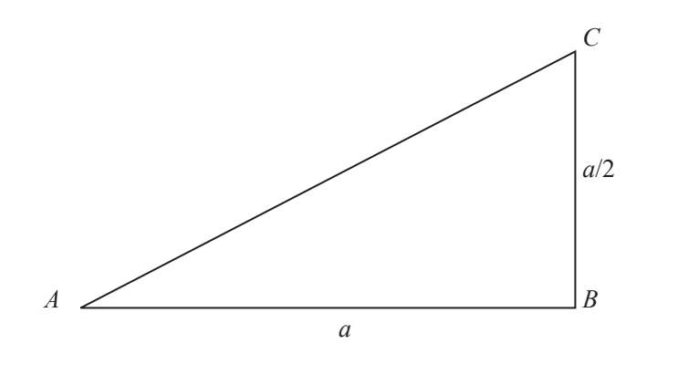
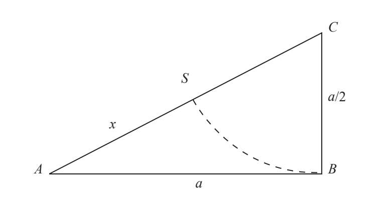
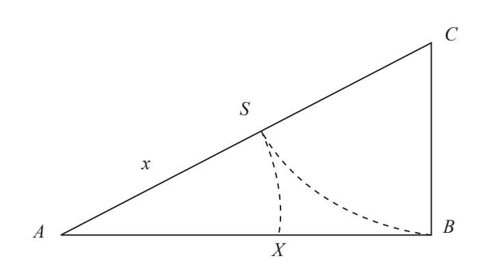
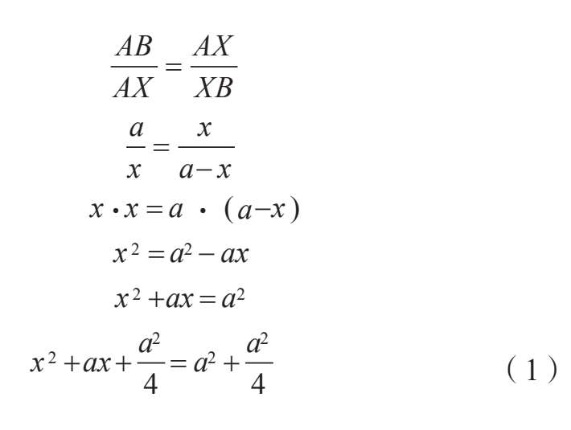
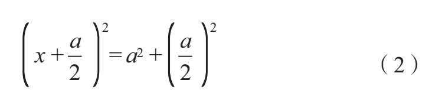

线段AB的长度为a，我们希望在AB上找到一点X将其分为两段，两段之比为黄金比例。这一过程可以分为三个步骤：
1.作一个直角三角形，两条直角边分别为a和a/2：

2.以C为圆心，CB为半径（半径长为a/2）画弧，弧线与AC交于点S：

3.再以A为圆心，AS为半径画弧，弧线与AB交于点X。点X满足AX=x=AC-（a/2），这一点就是黄金分割点。我们还可以验证点X是否满足AX/XB=Φ：

这种证明方式就是构造性证明。为什么通过这种证明方法就可以确定黄金比例？如果点X满足如下条件，那它便是黄金分割点：

同时请记住，二项式平方的展开式为（s+t）2=s2+2st+t2，因此表达式（1）可以变为：

我们将毕达哥拉斯定理套用到表达式（2）中，这样就能够确定在直角边为a和a/2的直角三角形中，（x+a/2）是直角三角形的一条斜边。
因此斜边AC长为（x+a/2）。如果减去CS=CB=a/2，那么AS=x=AX。